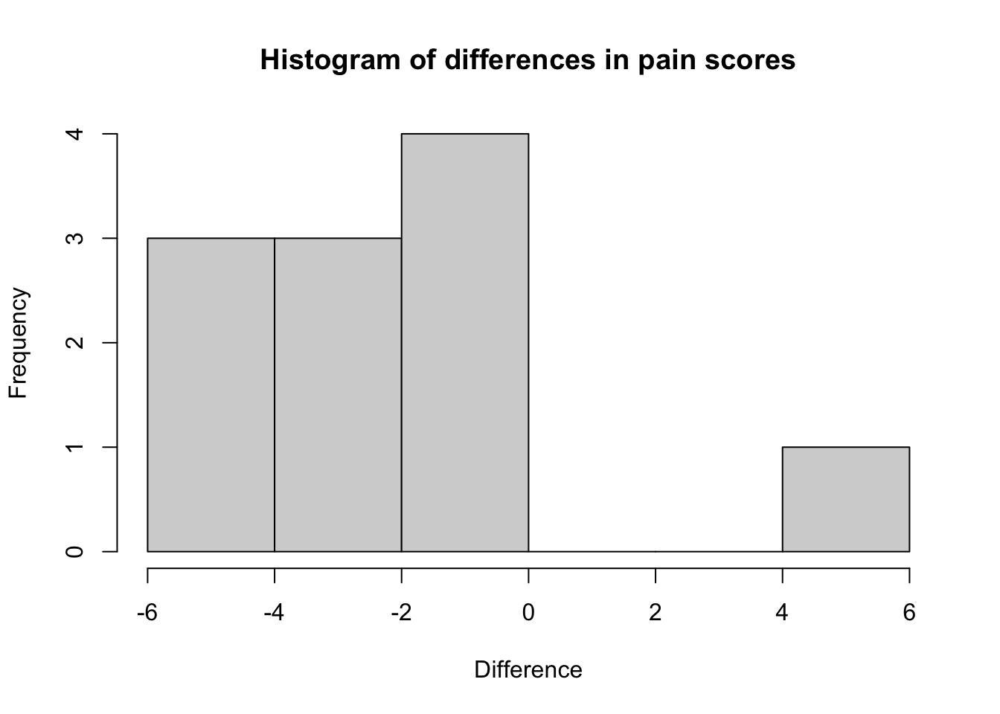

Chapter 5 Analysing non-normal data
5.1 Transforming non-normally distributed variables
One option for dealing with a non-normally distributed varaible is to transform it into its square, square root or logarithmic value. The new transformed variable may be normally distributed and therefore a parametric test can be used. First we check the distribution of the variable for normality, e.g. by plotting a histogram.
You can calculate a new, transformed, variable using variable transformation commands. For example, to create a new column of data based on the log of length of stay using Base R:
library(haven) # For importing data
library(skimr)
library(labelled)
hospital <- read_dta("/Users/td/Documents/GithubRepos/phcm9795/data/examples/Example_9.1.dta") %>%
unlabelled()
hospital$ln_los <- log(hospital$los+1)
skim(hospital)| Name | hospital |
| Number of rows | 132 |
| Number of columns | 6 |
| _______________________ | |
| Column type frequency: | |
| character | 1 |
| factor | 2 |
| numeric | 3 |
| ________________________ | |
| Group variables | None |
Variable type: character
| skim_variable | n_missing | complete_rate | min | max | empty | n_unique | whitespace |
|---|---|---|---|---|---|---|---|
| gender | 0 | 1 | 1 | 1 | 0 | 2 | 0 |
Variable type: factor
| skim_variable | n_missing | complete_rate | ordered | n_unique | top_counts |
|---|---|---|---|---|---|
| infect | 0 | 1 | FALSE | 2 | No: 106, Yes: 26 |
| surgery | 0 | 1 | FALSE | 3 | Car: 53, Abd: 48, Oth: 31 |
Variable type: numeric
| skim_variable | n_missing | complete_rate | mean | sd | p0 | p25 | p50 | p75 | p100 | hist |
|---|---|---|---|---|---|---|---|---|---|---|
| id | 0 | 1 | 75.50 | 38.25 | 10 | 42.75 | 75.50 | 108.25 | 141.0 | ▇▇▇▇▇ |
| los | 0 | 1 | 38.05 | 35.78 | 0 | 20.75 | 27.00 | 42.00 | 244.0 | ▇▁▁▁▁ |
| ln_los | 0 | 1 | 3.41 | 0.71 | 0 | 3.08 | 3.33 | 3.76 | 5.5 | ▁▁▇▇▂ |
A tidyverse version uses the mutate command to create a new variable:
library(tidyverse)
#> ── Attaching packages ─────────────────── tidyverse 1.3.1 ──
#> ✓ ggplot2 3.3.5 ✓ purrr 0.3.4
#> ✓ tibble 3.1.6 ✓ dplyr 1.0.8
#> ✓ tidyr 1.2.0 ✓ stringr 1.4.0
#> ✓ readr 2.1.2 ✓ forcats 0.5.1
#> ── Conflicts ────────────────────── tidyverse_conflicts() ──
#> x dplyr::filter() masks stats::filter()
#> x dplyr::lag() masks stats::lag()
hospital <- read_dta("/Users/td/Documents/GithubRepos/phcm9795/data/examples/Example_9.1.dta") %>%
unlabelled()
hospital <- hospital %>%
mutate(ln_los = log(los+1))
skim(hospital)| Name | hospital |
| Number of rows | 132 |
| Number of columns | 6 |
| _______________________ | |
| Column type frequency: | |
| character | 1 |
| factor | 2 |
| numeric | 3 |
| ________________________ | |
| Group variables | None |
Variable type: character
| skim_variable | n_missing | complete_rate | min | max | empty | n_unique | whitespace |
|---|---|---|---|---|---|---|---|
| gender | 0 | 1 | 1 | 1 | 0 | 2 | 0 |
Variable type: factor
| skim_variable | n_missing | complete_rate | ordered | n_unique | top_counts |
|---|---|---|---|---|---|
| infect | 0 | 1 | FALSE | 2 | No: 106, Yes: 26 |
| surgery | 0 | 1 | FALSE | 3 | Car: 53, Abd: 48, Oth: 31 |
Variable type: numeric
| skim_variable | n_missing | complete_rate | mean | sd | p0 | p25 | p50 | p75 | p100 | hist |
|---|---|---|---|---|---|---|---|---|---|---|
| id | 0 | 1 | 75.50 | 38.25 | 10 | 42.75 | 75.50 | 108.25 | 141.0 | ▇▇▇▇▇ |
| los | 0 | 1 | 38.05 | 35.78 | 0 | 20.75 | 27.00 | 42.00 | 244.0 | ▇▁▁▁▁ |
| ln_los | 0 | 1 | 3.41 | 0.71 | 0 | 3.08 | 3.33 | 3.76 | 5.5 | ▁▁▇▇▂ |
You can now check whether this logged variable is normally distributed as described in Module 2, for example by plotting a histogram as shown in Figure 9.2.
To obtain the back-transformed mean shown in Output 9.1, we can use the exp command:
exp(3.407232)
#> [1] 30.18159If your transformed variable is approximately normally distributed, you can apply parametric tests such as the t-test. In the Worked Example 9.1 dataset, the variable infect (presence of nosocomial infection) is a binary categorical variable. To test the hypothesis that patients with nosocomial infection have a different length of stay to patients without infection, you can conduct a t-test on the ln_los variable. You will need to back transform your mean values, as shown in Worked Example 9.1 in the course notes when reporting your results.
5.2 Wilcoxon ranked-sum test
We use the wilcox.test function to perform the Wilcoxon ranked-sum test:
wilcox.test(continuous_variable ~ group_variable, data=df, correct=FALSE)The Wilcoxon ranked-sum test will be demonstrated using the length of stay data in Example_9.1.dta. Here, out continuous variable is los and the grouping variable is infect.
wilcox.test(los ~ infect, data=hospital, correct=FALSE)
#>
#> Wilcoxon rank sum test
#>
#> data: los by infect
#> W = 949, p-value = 0.01402
#> alternative hypothesis: true location shift is not equal to 05.3 Wilcoxon matched-pairs signed-rank test
The wilcox.test function can also be used to conduct the Wilcoxon matched-pairs signed-rank test. The specification of the variables is a little different, in that each variable is specified as dataframe$variable:
wilcox.test(df$continuous_variable_1, df$continuous_variable_1, paired=TRUE)We will demonstrate using the dataset on the arthritis drug cross-over trial (Example_9.2.dta). Like the paired t-test the paired data need to be in separate columns.
arthritis <- read_dta("/Users/td/Documents/GithubRepos/phcm9795/data/examples/Example_9.2.dta") %>%
unlabelled()
arthritis$difference = arthritis$drug_1 - arthritis$drug_2
hist(arthritis$difference, xlab="Difference", main="Histogram of differences in pain scores")
wilcox.test(arthritis$drug_1, arthritis$drug_2, paired=TRUE)
#> Warning in wilcox.test.default(arthritis$drug_1,
#> arthritis$drug_2, paired = TRUE): cannot compute exact p-
#> value with ties
#>
#> Wilcoxon signed rank test with continuity correction
#>
#> data: arthritis$drug_1 and arthritis$drug_2
#> V = 10.5, p-value = 0.04898
#> alternative hypothesis: true location shift is not equal to 05.4 Estimating rank correlation coefficients
The analyses for Spearman’s and Kendall’s rank correlation are conducted in similar ways:
lung <- read_dta("/Users/td/Documents/GithubRepos/phcm9795/data/examples/Example_8.1.dta")
cor.test(lung$Height, lung$FVC, method="spearman")
#> Warning in cor.test.default(lung$Height, lung$FVC, method =
#> "spearman"): Cannot compute exact p-value with ties
#>
#> Spearman's rank correlation rho
#>
#> data: lung$Height and lung$FVC
#> S = 72699, p-value < 2.2e-16
#> alternative hypothesis: true rho is not equal to 0
#> sample estimates:
#> rho
#> 0.7475566
cor.test(lung$Height, lung$FVC, method="kendall")
#>
#> Kendall's rank correlation tau
#>
#> data: lung$Height and lung$FVC
#> z = 8.8244, p-value < 2.2e-16
#> alternative hypothesis: true tau is not equal to 0
#> sample estimates:
#> tau
#> 0.5609431